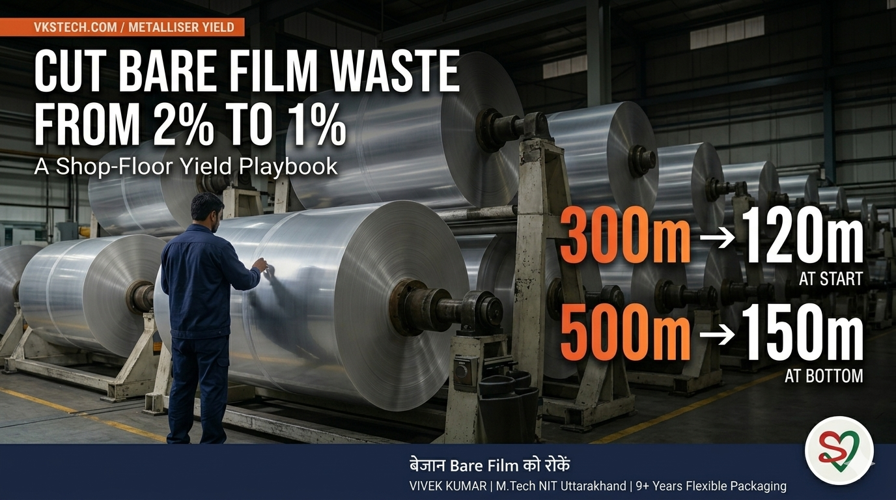
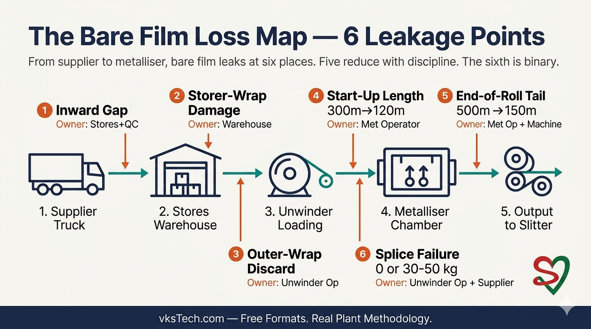
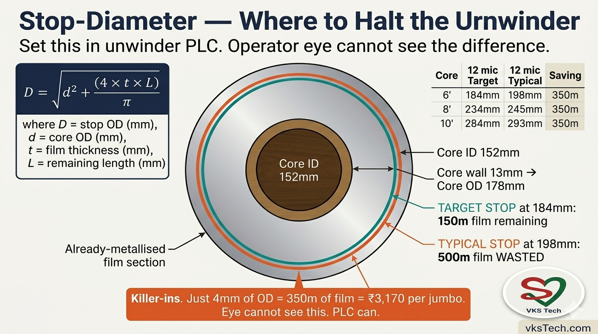
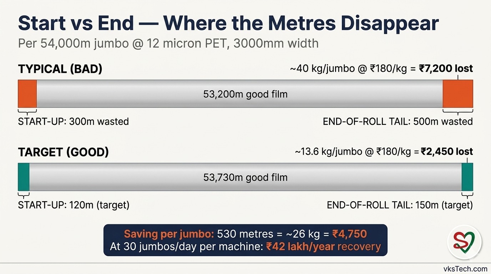
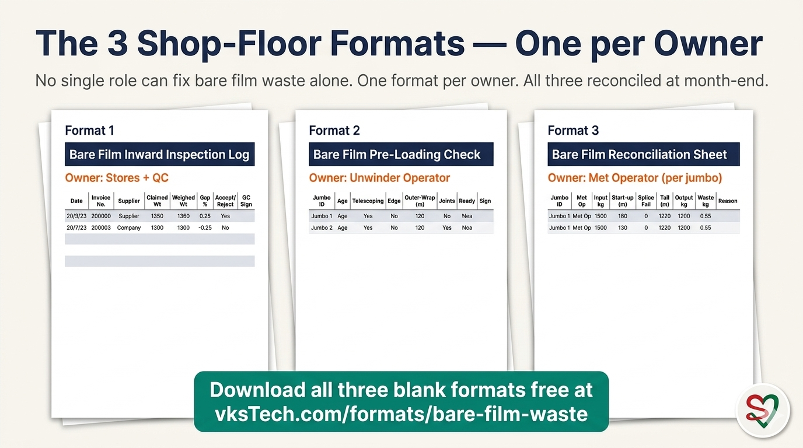
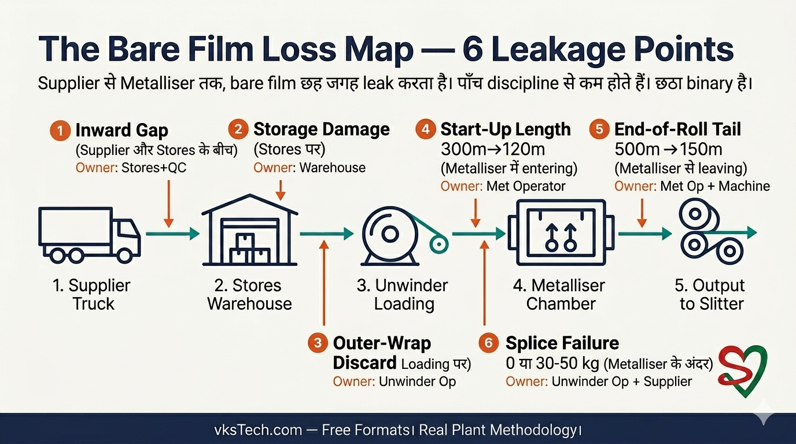
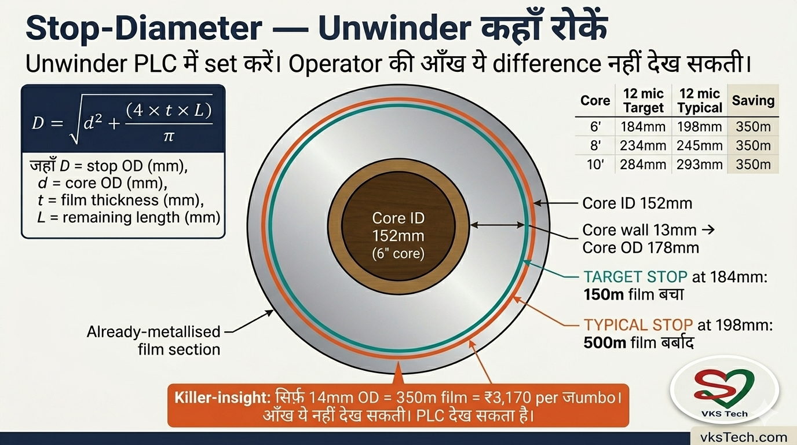
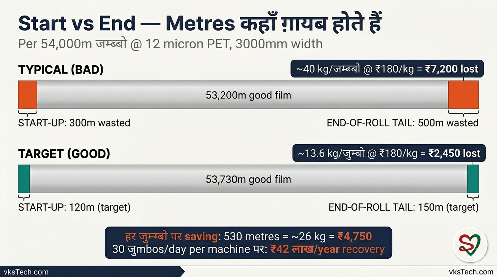
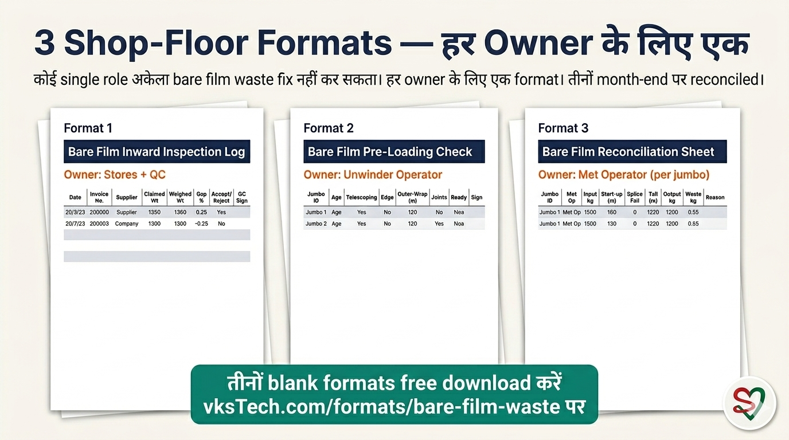

🎯 Cut Bare Film Waste from 2% to 1% — A Shop-Floor Yield Playbook
📖 18-min read | Real Plant Methodology | Published April 2026 | Bookmark for reference
Most metalliser plants in India track metallised waste obsessively. Output kg, OD reject, slitter scrap — every percentage point gets a meeting. But when you ask the same plant how many kilograms of bare film were wasted before metallisation, the answer is usually a shrug. That gap is where lakhs of rupees disappear every month, quietly, because nobody owns the number.
I have spent 9+ years inside metalliser plants and I will tell you something most process engineers learn the hard way: bare film waste is a different animal from metallised waste. It sits at a different stage, has different owners (Stores, QC, Unwinder operator — not just the Met operator), and is invisible to the metallisation OD tracker. The plants that figure this out recover ₹3-5 lakh per machine per month. The plants that don't keep paying the leak.
This blog is bare-film-side yield. It is the upstream half of the metalliser improvement story. Blog 24 covered metallised-side waste (the downstream half). Together they recover the full yield gap. Read both, and use the formats from both.
- Industry typical bare film waste: ~2-2.5% of bare film input
- Achievable target: ~1% with discipline + machine settings
- Per 54,000m jumbo at start-up: 300m typical → 120m target (180m saving)
- Per 54,000m jumbo at end-of-roll: 500m typical → 150m target (350m saving)
- Splice failure cost: 0 kg if joint holds, 30-50 kg if it fails — binary, not structural
- Capex required: Near zero — three formats and a stop-diameter setting on the unwinder
- Recovery for a 200 MT/month machine: ~₹3.7 lakh/month direct material cost recovery
📍 Why Bare Film Waste Hides — and Why It Costs More Than You Track
Walk into any metalliser hall and look at the production sheet. You will find columns for OD reject, sample, trim, and total metallised waste. What you will almost never find is a column for bare film consumed versus bare film purchased. The two numbers are kept in two different systems — Stores tracks the inward, Production tracks the output, and nobody reconciles them at the jumbo level.
That gap between inward and consumed is the bare film waste. It accumulates from six places, before and around the metalliser, and almost none of them show up on the metallisation OD tracker. Five are reducible through discipline and one machine setting. The sixth — splice failure — is binary and reliability-driven. Get all six right and the typical 2-2.5% bare film waste collapses to ~1%, with no capex.
The ownership map matters because no single role can fix this alone:
| Source | Owner | Where it shows up |
|---|---|---|
| 1. The Inward Gap (supplier vs weighed) | Stores + QC | Weighbridge log vs invoice |
| 2. Storage & Handling Damage | Warehouse + Material Handler | Reject jumbos + outer-layer discard |
| 3. Outer-Wrap Discard at Loading | Unwinder operator | Wrap film bin near unwinder |
| 4. Start-Up Length (300m → 120m) | Met operator | Bottom Waste at slitter |
| 5. End-of-Roll Tail (500m → 150m) | Met operator + machine setting | Bare film left on used core |
| 6. Splice Failure (binary, 0 or 30-50 kg) | Unwinder op + supplier QC | Web break event + scrap roll |

🛠️ Source 1 — The Inward Gap (Supplier Weight vs Weighed)
Every consignment of bare film arrives with a supplier-stated weight on the invoice. Almost no plant weighs every consignment on its own weighbridge before accepting. The few plants that do, find a consistent gap — usually 0.3% to 0.5% — between supplier weight and actual weighed weight. On a typical 20 MT consignment, that is 60 to 100 kg gone before a single metre is unwound.
Three discipline gaps drive this:
- No incoming weighbridge check. The consignment is accepted on supplier weight alone. The plant has no number to dispute.
- Core and packaging weight not deducted. Some suppliers invoice gross weight (including core, wrap, and pallet). A 6" or 8" wooden core can weigh 8-15 kg. Across 30 jumbos, that is 240-450 kg of "film" that is actually wood.
- Length tolerance abuse. Suppliers quote a length per jumbo (e.g., 54,000m) but actual length can be ±2% — sometimes consistently under. Length × thickness × width × density should match weight; if it does not, the plant is paying for film that is not there.
The fix: a per-consignment Inward Inspection Format filled at the weighbridge. Six columns: invoice no, supplier, claimed weight, weighed weight (net of core+packaging), length declared, gap %. If gap exceeds 0.5%, raise a debit note. After three months of consistent debit notes, supplier accuracy improves measurably.
This is not a margin recovery — it is a cost-of-goods correction. But it is the easiest 0.3-0.5% on this list to capture, and it has zero shop floor cost.
🛠️ Source 2 — Storage and Handling Damage
Bare film is fragile in ways that surprise people who have not handled it. A jumbo dropped 6 inches onto a hard floor can develop a hairline crack in the inner layers that propagates into a tear during metallisation. A roll stored leaning against a wall can starring (axial misalignment) within 48 hours. A jumbo stored in a humid corner near a leaking roof picks up moisture, which manifests as edge waviness and reject at slitter. None of this damage is visible from outside the wrap.
Typical loss: in a poorly managed warehouse, 1-2 jumbos per month per machine are rejected outright at incoming inspection. At 2,700 kg per jumbo and ₹180/kg, that is ₹4.8-9.7 lakh/year per machine, before any metalliser sees the film.
The discipline is unglamorous but proven:
- Always vertical storage on cradles. Never horizontal, never against walls. Cradles cost ₹200-400 each.
- FIFO with date stickers. Bare film over 60 days old has measurably higher reject rates. Use older stock first.
- Forklift/crane rule: never lift by core ends alone — always with proper sling or boom. A 2,700 kg jumbo lifted by core ends will crush the core and crack the inner layers.
- Visual check at receipt. Telescoping (lateral slip), starring, edge nicks, dent — all visible if someone looks. Ten seconds per jumbo at receipt prevents the reject 30 days later.
🛠️ Source 3 — Outer-Wrap Discard at Loading
When the Unwinder operator loads a fresh jumbo, the first 30 to 200 metres are routinely peeled off and discarded. The reason: outer layer is dirty, has wrap-rub marks, has small dents from packaging, or shows protrusions. Operator judgment governs how much gets peeled.
The good operator peels 30 metres or less — just the visibly affected outer wrap. The undisciplined operator peels 150-200 metres "to be safe". On a 54,000m jumbo, that is the difference between 0.06% and 0.37% — a 6× swing driven entirely by operator habit.
Three behaviours separate the disciplined operator from the wasteful one:
- Inspecting before peeling, not while peeling. The disciplined operator removes wrap, looks at the first layer for 10 seconds, decides 30m or 50m, and cuts cleanly. The undisciplined operator peels and unrolls and peels and unrolls.
- Knowing what is acceptable downstream. Light wrap-rub usually metallises fine. Soft surface scratch usually metallises fine. Edge nick or visible crease — that needs to come off. Without this knowledge, operators err on the side of "remove more."
- Measured, not estimated. The disciplined operator's unwinder has a metre counter or paint mark at 30m and 100m. He cuts at the mark, not by feel.
Across 30 jumbos/day, the difference between 30m and 200m of outer-wrap discard is 5,100m of bare film per day = ~258 kg/day = ~₹46,000/day at ₹180/kg. From one operator habit.
🛠️ Source 4 — Start-Up Length (300m → 120m, the Biggest Single Lever)
This is where the metalliser starts each cycle. Threading the film path, joining to the rewinder, pumping down, energising sources, ramping OD to target. The film consumed during this sequence is bare-film waste from the metalliser's perspective and "Bottom Waste at slitter" from the slitter's perspective (because the start-of-cycle wind sits at the core, which is the last to be slit). Same metres, two views.
Here is the breakdown of where 120m is justified and 300m is not:
| Step | Disciplined operator | Undisciplined operator |
|---|---|---|
| Threading + joint pass | ~20 m | ~50-80 m |
| OD ramp to target | ~100 m | ~200-220 m |
| Total start-up | 120 m | 250-300 m |
The undisciplined operator loses 180m more per jumbo. At 12 micron PET, 3000mm width, that is ~9 kg of bare film per jumbo. Across 30 jumbos/day = 270 kg/day = ~₹48,000/day per machine just from start-up discipline.
Three controllable factors:
- Pre-pump-down preparation. Boats seated, wires aligned, clamps clean — verified before chamber close, not after. The undisciplined operator closes chamber and discovers the problem at OD ramp, costing 100+ metres.
- Confident OD ramp. Properly conditioned source bars hit target current in 60-80m. Operators who "ramp gently to be safe" stretch this to 200m without any benefit.
- Active first-200m monitoring. The disciplined operator watches in-line OD for the first 200m and corrects if needed. The undisciplined operator sets the recipe and looks away.
The same 180m of metres show up as "Ramp-Up Waste" in Blog 24's per-jumbo metallised tracking format (where it's the largest single contributor — 43% of metallised waste savings). On bare-film-side it is "Start-Up Length" tracked at unwinder. Either side catches it. Best practice: track from both sides. If the metalliser side shows 100m and the slitter Bottom Waste shows 280m, you have a measurement disagreement worth investigating — usually a metre-counter calibration issue or splice-pass over-counted.
🛠️ Source 5 — End-of-Roll Tail (500m → 150m, the Stop-Diameter Setting)
This is the leak that shocks plants the most when they finally measure it. At end of jumbo, the operator stops the unwinder when "the roll looks empty." On an 8" or 10" core, "empty" by eye is typically 200-300mm OD — leaving 400-500 metres of perfectly good bare film unmetallised, dumped with the core into scrap.
The reason this is reducible: core wall thickness governs how close to the core you can safely run. Below a certain stop-diameter, the residual film is too thin to grip the core reliably and you risk a tail-end break. But that minimum diameter is much smaller than what operators typically use. For 8-12 micron film, 150m of remaining film is enough buffer — and the corresponding stop-OD is just a few millimetres above bare core.
Here is the math, for the three core sizes used at most Indian metalliser plants:

📊 View full Stop-Diameter Reference Table (9 rows: 6"/8"/10" cores × 8/10/12 micron film) ▼
| Core size | Core OD | Film thickness | Stop-OD at 150m (Target) | Stop-OD at 500m (Typical) | Saving |
|---|---|---|---|---|---|
| 6" | 178 mm | 8 micron | 182 mm | 192 mm | 350 m |
| 10 micron | 183 mm | 195 mm | 350 m | ||
| 12 micron | 184 mm | 198 mm | 350 m | ||
| 8" | 229 mm | 8 micron | 232 mm | 240 mm | 350 m |
| 10 micron | 233 mm | 243 mm | 350 m | ||
| 12 micron | 234 mm | 245 mm | 350 m | ||
| 10" | 280 mm | 8 micron | 283 mm | 289 mm | 350 m |
| 10 micron | 283 mm | 291 mm | 350 m | ||
| 12 micron | 284 mm | 293 mm | 350 m |
Math: D = √[d² + (4 × t × L) / π]. Core wall taken as 13mm. Adjust core OD by ±2mm if your plant's wall thickness differs.
Look at any row: the difference between Target stop-OD and Typical stop-OD is just 8-14 millimetres of roll diameter. On a roll spinning at production speed, the human eye cannot see this difference. Both rolls look "nearly empty." This is exactly why stop-diameter must be set on the unwinder PLC and not left to operator judgment. Sensor cost is <₹15,000. Annual recovery per machine: ~₹28 lakh at ₹180/kg, 12 mic PET, 30 jumbos/day.
Per-jumbo math at 12 micron PET, 3000mm width: 350m × (3.0 × 0.012 × 1.40) = 17.6 kg saved per jumbo. At ₹180/kg = ₹3,170 per jumbo. At 30 jumbos/day = ₹95,000/day = ~₹28 lakh/month per machine from this single source.
The fix is two parts:
- Set stop-diameter in the unwinder PLC (or install a diameter sensor if not present). Use the table above as the setpoint reference. Lock the setpoint behind a supervisor password — operators must not be able to override during production.
- Train tail-end recovery. When the alarm trips at stop-diameter, the operator stops the cycle, opens the chamber on schedule, and the leftover ~150m of film is recovered onto a small auxiliary core for the next cycle's threading (saving Source 4 metres on the next start-up). Some plants treat this as too fiddly. The math says it pays.
🛠️ Source 6 — Splice Failure (Binary, Not Structural)
Splices in bare film rolls happen because suppliers join two shorter rolls to make one full-length jumbo, or because a film breakage during base film production was rejoined during slitting. Every bare film jumbo has 0-3 splices. Splice failure on the metalliser is the one source on this list that is not reducible by gradual operator discipline. It is binary:
| Outcome | Bare film loss | Frequency |
|---|---|---|
| Joint passes through metalliser successfully | 0 kg (just brief OD dip) | ~95-98% of splices |
| Joint fails at metalliser (web break) | 30-50 kg per failure | ~2-5% of splices |
Why 30-50 kg? When a joint fails inside the chamber, the operator must vent, open chamber, re-thread, re-join, re-pump, and ramp OD again. The film between the broken joint and the rewinder (typically 100-200m unwound but caught in the chamber) gets cut and scrapped. Plus the next start-up consumes another 120-150m of bare film. Total ~600-1000 metres of film lost per failure, which at 12 mic PET 3000mm is 30-50 kg.
This is why splice failure rate matters far more than splice count. A plant with disciplined splice handling can run 0 splice failures across hundreds of jumbos. A plant with sloppy splice handling can lose 30-50 kg twice a week — that is ₹40-72 lakh/year per machine from this one event class.
Three discipline points control splice failure rate:
- Joint inspection at receipt. Every joint visible from outside the wrap should be flagged at incoming inspection. Joint with visible misalignment, weak tape adhesion, or non-overlap geometry → reject the jumbo or insist supplier re-joins.
- Speed reduction at splice pass. The disciplined operator slows metalliser speed by 30-50% as a known splice approaches the chamber. Most metallisers have a splice-detection sensor; use it. If you don't have one, the unwinder operator marks splice locations on the side of the roll with paint at receipt, and signals the met operator.
- Joint geometry standard. Insist on lap-splice with double-sided film tape (not butt splice with single-side tape). Lap length minimum 25-30mm. This is a procurement standard you write into the supplier agreement.
📐 The Structural Floor — What Will Not Reduce Further
To keep this blog honest, here is what does not reduce, no matter how disciplined you get:
- The 120m start-up length itself. 20m threading + 100m OD ramp is physics, not slack. You cannot push below this without compromising metallised quality. Targeting "60m start-up" is a fool's errand and will damage OD consistency.
- The 150m end-of-roll tail. Below this, the residual film is too thin to grip core reliably. Tail-break risk rises sharply, and a tail break in the chamber costs 30-50 kg (Source 6 territory). Stop at 150m.
- ±0.3% inward weight tolerance. Even the best supplier cannot weigh to zero error. Industry-standard weighbridge accuracy is ±0.2-0.3%. Push beyond this only via supplier change, not via debit notes alone.
This is the floor of the leak. Below it, you are spending political capital on a 0% lever — same trap as Blog 24's "trim is structural" warning. Stay above the floor; squeeze the rest.

📋 The 3 Shop-Floor Formats — One per Owner
Bare film waste is a 3-owner problem. Stores doesn't see start-up loss. The Met operator doesn't see inward gap. The Unwinder operator doesn't see stop-diameter discipline. One format per owner, all three reconciled at month-end. This is the centrepiece artefact of this blog.

Format 1 — Bare Film Inward Inspection Log (Stores + QC)
Filled at the weighbridge for every consignment. Columns:
| Column | What it captures | Action threshold |
|---|---|---|
| Date / Invoice No. | Consignment identifier | — |
| Supplier | Vendor name | — |
| Claimed weight (kg) | Per supplier invoice | — |
| Weighed weight (kg, net) | On plant weighbridge, net of core+packaging | — |
| Length declared (m) | Per supplier invoice / sticker | — |
| Gap % | (Claimed − Weighed) / Claimed × 100 | > 0.5% → debit note |
| Telescoping / Starring (Y/N) | Visual at receipt | Y → quarantine |
| Edge nick / dent (Y/N) | Visual at receipt | Y → quarantine |
| Joint count visible | Per jumbo, mark on side | > 3 → flag for met operator |
| Accept / Reject | Final disposition | — |
| QC signature | Accountability | — |
Format 2 — Bare Film Pre-Loading Check (Unwinder Operator)
Filled per jumbo, before loading on unwinder. Columns:
| Column | What it captures | Action threshold |
|---|---|---|
| Jumbo ID | Unique identifier | — |
| Age in store (days) | Receipt date to today | > 60 days → flag |
| Telescoping check (Y/N) | Lateral slip visible | Y → reject |
| Edge condition | Nicks, dents, waviness | Reject if > 5mm dent |
| Outer-wrap discard (m) | Length peeled off | Target ≤ 30m |
| Joint count + locations marked | Marked on roll side with paint | — |
| Ready to load (tick) | Final go-ahead | — |
| Operator signature | Accountability | — |
Format 3 — Bare Film Reconciliation Sheet (Met Operator, per Jumbo)
Filled at end of each jumbo cycle. Columns:
| Column | What it captures | Benchmark (12 mic PET, 54000m jumbo) |
|---|---|---|
| Jumbo ID | Linked to Format 2 | — |
| Met operator name | Accountability | — |
| Input bare weight (kg) | From Format 1 ÷ jumbos | ~2,720 kg |
| Start-up length (m) | Threading + ramp metres | ≤ 120 m |
| Splice events this jumbo | Count + pass/fail per splice | 0 fails |
| End-of-roll tail (m) | Film left on used core | ≤ 150 m |
| Output good metallised (kg) | From rewind weighbridge | — |
| Bare film waste (kg) | Input − output − metallised waste from Blog 24 format | ≤ 27 kg/jumbo |
| Reason if > benchmark | Free-text root cause | — |
The reconciliation column is the discipline that closes the loop. It cross-checks against Blog 24's Per-Jumbo Tracking Format (which captures metallised-side losses). When numbers don't match, you've found a measurement gap or an unmeasured loss source — both are wins.
📥 Free Downloadable Formats
All three formats above are available as printable A4 PDF on vksTech.com. Download, print, laminate, and put on the shop floor. No subscription, no email gate. Use them, modify them for your plant, share them with your team.
→ Download Bare Film Waste Formats (PDF) at vksTech.com/formats/bare-film-waste
💰 Calculator — What's the Leak at Your Plant?
Edit any input below. The calculator updates live. Default values are typical for an Indian metalliser plant running 12 micron PET on a 200 MT/month machine.
⚠️ Three Mistakes Process Engineers Make on Bare Film Waste
Mistake 1 — Tracking only metallised waste. If your plant tracks output reject % but not bare film consumption %, you are missing half the leak. The Met operator is incentivised to push for output kgs and looks fine on the dashboard while bare film is bleeding upstream. Add bare film consumption tracking — Format 3 above — and the picture changes.
Mistake 2 — Not setting stop-diameter on the unwinder. This is a 5-minute PLC change worth ₹28 lakh/year per machine. The reason it doesn't get done at most plants: nobody owns the unwinder PLC settings. Process engineering thinks it is maintenance's job. Maintenance thinks it is OEM's job. Nobody does it. Make this a process engineering responsibility, written down.
Mistake 3 — No incoming weighbridge check. "Supplier weight is reliable, we have used them for years." This is the most common excuse and the most expensive. A 0.3% inward gap on 250 MT/month consumption is 750 kg/month = ₹13.5 lakh/year. Check the weight. Always. After three months of consistent debit notes, every supplier sends accurate weights — which is the actual goal.
🎯 Where to Start at Your Plant
This is an 8-week rollout, not a one-day fix. Sequenced for maximum impact-to-effort ratio:
- Week 1 — Diagnostic. Weigh 5 incoming consignments on plant weighbridge. Measure end-of-roll tail length on 30 jumbos (cut and weigh). Time start-up length on 30 cycles. You now have your baseline.
- Week 2 — Set stop-diameter on unwinder PLC. Use the table in Source 5. Lock behind supervisor password. This single action captures the largest chunk of available savings.
- Week 3-4 — Roll out Format 3 (Reconciliation). Met operator fills per jumbo. Daily review. Coach on start-up discipline.
- Week 5-6 — Roll out Format 2 (Pre-Loading) and Format 1 (Inward). Unwinder operator and Stores. Start raising debit notes for >0.5% inward gap.
- Week 7-8 — Stabilise. Weekly review of all three formats. Set monthly target. Celebrate first month under target.
Realistic outcome at 8 weeks: bare film waste from ~2% to ~1.2-1.3%. Realistic outcome at 6 months: ~1%. Realistic outcome forever: under 1% if Format 3 stays on the shop floor with operator names visible.
Bare film waste reduction completes the upstream half of metalliser yield improvement. Combined with the metallised-side and SMED work, a typical 2-machine plant recovers ₹1.6 to ₹2.2 crore per year. The full series:
- Blog #22: Boat-Set SMED — 2017 case study (Lever 2 deep dive)
- Blog #23: Inter-Cycle SMED — 2016 case study (Lever 1 deep dive)
- Blog #24: Metallised Waste 1.8% → 0.9% — operator-discipline playbook (downstream half)
- Blog #25: 2 SMED Levers Hub — strategic overview
- This blog (#26): Bare Film Waste 2% → 1% — upstream yield playbook (you are here)
- Blog #27 (coming next): Web Break Reduction at Metalliser — Target Zero kg (cross-departmental action)
🎯 Bare Film Waste को 2% से 1% तक काटें — एक Shop-Floor Yield Playbook
📖 18-min read | Real Plant Methodology | April 2026 में published | Reference के लिए bookmark करें
India के ज़्यादातर metalliser plants metallised waste को बहुत अच्छे से track करते हैं। Output kg, OD reject, slitter scrap — हर percentage point पर meeting होती है। पर अगर उसी plant से पूछो metallisation से पहले कितना bare film waste हुआ, जवाब आम तौर पर एक shrug होता है। यही gap है जहाँ हर महीने लाखों रुपए चुपचाप निकल जाते हैं, क्योंकि उस number का कोई owner नहीं है।
मैंने 9+ साल metalliser plants के अंदर बिताए हैं और एक बात बताऊँगा जो ज़्यादातर process engineers hard way से सीखते हैं: bare film waste, metallised waste से एक अलग जानवर है। ये अलग stage पर है, अलग owners हैं (Stores, QC, Unwinder operator — सिर्फ़ Met operator नहीं), और metallisation OD tracker को ये दिखता ही नहीं। जो plants ये figure out कर लेते हैं, वो हर machine पर हर महीने ₹3-5 लाख recover करते हैं। जो नहीं करते, वो leak भरते रहते हैं।
ये blog bare-film-side yield की है। ये metalliser improvement story का upstream half है। Blog 24 ने metallised-side waste cover की (downstream half)। दोनों मिलकर पूरा yield gap recover करते हैं। दोनों पढ़ें, और दोनों के formats use करें।
- Industry typical bare film waste: bare film input का ~2-2.5%
- Achievable target: ~1% — discipline + machine settings के साथ
- 54,000m जumbo पर start-up पर: 300m typical → 120m target (180m saving)
- 54,000m जumbo पर end-of-roll पर: 500m typical → 150m target (350m saving)
- Splice failure cost: 0 kg अगर joint चलता है, 30-50 kg अगर fail हो जाए — binary, structural नहीं
- Capex required: लगभग zero — तीन formats और unwinder पर एक stop-diameter setting
- 200 MT/month machine पर recovery: ~₹3.7 लाख/month direct material cost recovery
📍 Bare Film Waste क्यों छुपा रहता है — और Track से ज़्यादा क्यों costs करता है
किसी भी metalliser hall में जाएँ और production sheet देखें। OD reject, sample, trim, और total metallised waste के columns मिलेंगे। जो लगभग कभी नहीं मिलेगा — bare film consumed vs bare film purchased का column। दो numbers दो अलग systems में रहते हैं — Stores inward track करता है, Production output track करती है, और कोई जumbo level पर reconcile नहीं करता।
Inward और consumed के बीच का gap ही bare film waste है। ये छह जगह से accumulate होता है, metalliser के पहले और आसपास, और इनमें से लगभग कोई भी metallisation OD tracker पर नहीं दिखता। पाँच discipline और एक machine setting से reducible हैं। छठा — splice failure — binary है और reliability-driven है। सब छह सही करें और typical 2-2.5% bare film waste ~1% पर आ जाता है, बिना capex के।
Ownership map matter करता है क्योंकि कोई single role अकेला इसे fix नहीं कर सकता:
| Source | Owner | कहाँ दिखता है |
|---|---|---|
| 1. Inward Gap (supplier vs weighed) | Stores + QC | Weighbridge log vs invoice |
| 2. Storage & Handling Damage | Warehouse + Material Handler | Reject jumbos + outer-layer discard |
| 3. Outer-Wrap Discard at Loading | Unwinder operator | Unwinder के पास wrap film bin |
| 4. Start-Up Length (300m → 120m) | Met operator | Slitter पर Bottom Waste |
| 5. End-of-Roll Tail (500m → 150m) | Met operator + machine setting | Used core पर बचा bare film |
| 6. Splice Failure (binary, 0 या 30-50 kg) | Unwinder op + supplier QC | Web break event + scrap roll |

🛠️ Source 1 — Inward Gap (Supplier Weight vs Weighed)
हर bare film consignment supplier-stated weight के साथ invoice पर आता है। लगभग कोई plant accept करने से पहले हर consignment अपनी weighbridge पर weigh नहीं करता। जो कुछ plants करते हैं, उन्हें consistent gap मिलता है — आम तौर पर 0.3% से 0.5% — supplier weight और actual weighed weight के बीच। 20 MT consignment पर वो 60 से 100 kg है, एक भी metre unwound होने से पहले।
तीन discipline gaps इसे drive करते हैं:
- कोई incoming weighbridge check नहीं। Consignment supplier weight पर ही accept होती है। Plant के पास dispute करने को कोई number नहीं।
- Core और packaging weight deduct नहीं। कुछ suppliers gross weight invoice करते हैं (core, wrap, और pallet सहित)। 6" या 8" wooden core 8-15 kg हो सकता है। 30 जumbos पर वो 240-450 kg "film" है जो असल में लकड़ी है।
- Length tolerance abuse। Suppliers हर जumbo पर length quote करते हैं (e.g., 54,000m) पर actual length ±2% हो सकती है — कभी-कभी consistently कम। Length × thickness × width × density = weight match होना चाहिए; अगर नहीं होता, plant film के लिए pay कर रहा है जो वहाँ है ही नहीं।
Fix: weighbridge पर per-consignment Inward Inspection Format। छह columns: invoice no, supplier, claimed weight, weighed weight (core+packaging deducted net), length declared, gap %। अगर gap 0.5% से ज़्यादा है, debit note raise करें। तीन महीनों के consistent debit notes के बाद, supplier accuracy measurably improve होती है।
ये margin recovery नहीं है — ये cost-of-goods correction है। पर इस list पर ये सबसे आसान 0.3-0.5% capture करना है, और इसका shop floor cost zero है।
🛠️ Source 2 — Storage और Handling Damage
Bare film उन तरीक़ों से fragile है जो handle न करने वालों को surprise करते हैं। एक jumbo जो hard floor पर 6 inches ऊँचाई से गिरे, उसकी inner layers में hairline crack बन सकती है जो metallisation के दौरान tear तक propagate हो जाए। Wall पर lean करके stored roll 48 hours में starring (axial misalignment) develop कर सकती है। Leaking roof के पास humid corner में stored jumbo moisture pick up करता है, जो edge waviness और slitter पर reject के रूप में दिखता है। ये सब damage बाहरी wrap से दिखाई नहीं देता।
Typical loss: poorly managed warehouse में, हर machine पर हर महीने 1-2 jumbos incoming inspection पर outright reject होते हैं। 2,700 kg per जumbo और ₹180/kg पर, वो ₹4.8-9.7 लाख/year per machine, किसी metalliser के film देखने से पहले ही।
Discipline unglamorous पर proven है:
- हमेशा cradle पर vertical storage। कभी horizontal, कभी wall पर नहीं। Cradles ₹200-400 each।
- Date stickers के साथ FIFO। 60 days से ज़्यादा पुराना bare film measurably ज़्यादा reject rates देता है। पुराना stock पहले use करें।
- Forklift/crane rule: कभी core ends से अकेले lift न करें — हमेशा proper sling या boom। 2,700 kg jumbo को core ends से lift करने पर core crush और inner layers crack हो जाएँगी।
- Receipt पर visual check। Telescoping (lateral slip), starring, edge nicks, dent — सब visible अगर कोई देखे। Receipt पर हर जumbo पर दस seconds 30 दिन बाद का reject रोक देते हैं।
🛠️ Source 3 — Loading पर Outer-Wrap Discard
जब Unwinder operator fresh jumbo load करता है, पहले 30 से 200 metres routinely peel off और discard होते हैं। Reason: outer layer dirty है, wrap-rub marks हैं, packaging से small dents हैं, या protrusions दिख रहे हैं। Operator judgment govern करता है कितना peel हो।
Good operator 30 metres या कम peel करता है — सिर्फ़ visibly affected outer wrap। Undisciplined operator 150-200 metres "to be safe" peel करता है। 54,000m जumbo पर वो 0.06% और 0.37% का difference है — 6× swing पूरी तरह operator habit से।
तीन behaviours disciplined operator को wasteful से अलग करते हैं:
- Peel करते वक़्त नहीं, peel करने से पहले inspect करना। Disciplined operator wrap हटाता है, पहली layer 10 seconds देखता है, decide करता है 30m या 50m, और cleanly cut करता है। Undisciplined operator peel करता है और unroll करता है और peel करता है।
- Downstream क्या acceptable है, ये पता होना। Light wrap-rub आम तौर पर ठीक metallise होता है। Soft surface scratch आम तौर पर ठीक metallise होता है। Edge nick या visible crease — वो हटाना है। इस knowledge के बिना, operators "ज़्यादा हटाओ" side पर err करते हैं।
- Measured, estimated नहीं। Disciplined operator के unwinder पर metre counter या 30m और 100m पर paint mark होता है। वो mark पर cut करता है, feel से नहीं।
30 जumbos/day पर, 30m और 200m outer-wrap discard का difference है हर दिन 5,100m bare film = ~258 kg/day = ~₹46,000/day at ₹180/kg। एक operator habit से।
🛠️ Source 4 — Start-Up Length (300m → 120m, सबसे बड़ा single Lever)
यहाँ metalliser हर cycle शुरू करता है। Film path threading, rewinder से joining, pumping down, sources energising, OD को target पर ramp करना। इस sequence के दौरान consumed film metalliser के perspective से bare-film waste है और slitter के perspective से "Bottom Waste at slitter" है (क्योंकि start-of-cycle wind core पर sit करता है, जो slit होने में last है)। Same metres, दो views।
120m क्यों justified है और 300m क्यों नहीं — breakdown:
| Step | Disciplined operator | Undisciplined operator |
|---|---|---|
| Threading + joint pass | ~20 m | ~50-80 m |
| OD ramp to target | ~100 m | ~200-220 m |
| Total start-up | 120 m | 250-300 m |
Undisciplined operator हर जumbo पर 180m ज़्यादा गँवाता है। 12 micron PET, 3000mm width पर वो ~9 kg bare film per जumbo है। 30 जumbos/day पर = 270 kg/day = ~₹48,000/day per machine सिर्फ़ start-up discipline से।
तीन controllable factors:
- Pre-pump-down preparation। Boats seated, wires aligned, clamps clean — chamber close से पहले verified, बाद में नहीं। Undisciplined operator chamber close करता है और OD ramp पर problem discover करता है, 100+ metres costing।
- Confident OD ramp। Properly conditioned source bars 60-80m में target current hit करते हैं। Operators जो "ramp gently to be safe" करते हैं, बिना benefit के 200m तक stretch करते हैं।
- Active first-200m monitoring। Disciplined operator पहले 200m तक in-line OD watch करता है और ज़रूरत हो तो correct करता है। Undisciplined operator recipe set करता है और देखना बंद कर देता है।
यही 180m metres Blog 24 के per-jumbo metallised tracking format में "Ramp-Up Waste" के रूप में दिखते हैं (जहाँ ये सबसे बड़ा single contributor है — metallised waste savings का 43%)। Bare-film-side पर ये "Start-Up Length" है, unwinder पर tracked। दोनों side इसे catch करते हैं। Best practice: दोनों sides से track करें। अगर metalliser side 100m और slitter Bottom Waste 280m दिखाए, आपके पास measurement disagreement है जिसे investigate करना worth है — आम तौर पर metre-counter calibration issue या splice-pass over-counted।
🛠️ Source 5 — End-of-Roll Tail (500m → 150m, Stop-Diameter Setting)
ये वो leak है जो plants को सबसे ज़्यादा shock करता है जब वो finally measure करते हैं। Jumbo के end पर operator unwinder रोकता है जब "roll empty लगता है।" 8" या 10" core पर, eye से "empty" आम तौर पर 200-300mm OD होता है — 400-500 metres perfectly good bare film unmetallised छोड़ कर, scrap में core के साथ डाल दिया जाता है।
ये क्यों reducible है: core wall thickness govern करता है core के कितना पास तक safely run कर सकते हैं। एक certain stop-diameter से नीचे, residual film core को reliably grip करने के लिए बहुत पतला है और tail-end break का risk है। पर वो minimum diameter operators के typical use से बहुत छोटा है। 8-12 micron film के लिए, 150m remaining film काफ़ी buffer है — और corresponding stop-OD bare core से सिर्फ़ कुछ millimetres ऊपर है।
Math, India के ज़्यादातर metalliser plants पर used तीन core sizes के लिए:

📊 पूरा Stop-Diameter Reference Table देखें (9 rows: 6"/8"/10" cores × 8/10/12 micron film) ▼
| Core size | Core OD | Film thickness | Stop-OD at 150m (Target) | Stop-OD at 500m (Typical) | Saving |
|---|---|---|---|---|---|
| 6" | 178 mm | 8 micron | 182 mm | 192 mm | 350 m |
| 10 micron | 183 mm | 195 mm | 350 m | ||
| 12 micron | 184 mm | 198 mm | 350 m | ||
| 8" | 229 mm | 8 micron | 232 mm | 240 mm | 350 m |
| 10 micron | 233 mm | 243 mm | 350 m | ||
| 12 micron | 234 mm | 245 mm | 350 m | ||
| 10" | 280 mm | 8 micron | 283 mm | 289 mm | 350 m |
| 10 micron | 283 mm | 291 mm | 350 m | ||
| 12 micron | 284 mm | 293 mm | 350 m |
Math: D = √[d² + (4 × t × L) / π]। Core wall 13mm माना। आपके plant की wall thickness अलग हो तो core OD ±2mm adjust करें।
किसी भी row को देखें: Target stop-OD और Typical stop-OD का difference है सिर्फ़ 8-14 millimetres of roll diameter। Production speed पर spinning roll पर, इंसानी आँख ये difference देख नहीं सकती। दोनों rolls "लगभग empty" लगते हैं। यही reason है कि stop-diameter unwinder PLC पर set होना चाहिए और operator judgment पर नहीं छोड़ना चाहिए। Sensor cost <₹15,000। Per machine annual recovery: ~₹28 लाख at ₹180/kg, 12 mic PET, 30 jumbos/day।
12 micron PET, 3000mm width पर per-जumbo math: 350m × (3.0 × 0.012 × 1.40) = 17.6 kg saved per जumbo। ₹180/kg पर = ₹3,170 per जumbo। 30 जumbos/day पर = ₹95,000/day = ~₹28 लाख/month per machine सिर्फ़ इस single source से।
Fix दो हिस्सों में:
- Unwinder PLC में stop-diameter set करें (या अगर present नहीं है तो diameter sensor install करें)। ऊपर वाले table को setpoint reference की तरह use करें। Setpoint को supervisor password के पीछे lock करें — production के दौरान operators override न कर पाएँ।
- Tail-end recovery train करें। जब stop-diameter पर alarm trip हो, operator cycle रोके, schedule पर chamber खोले, और बचा ~150m film small auxiliary core पर recover हो जाए next cycle की threading के लिए (next start-up पर Source 4 metres saving)। कुछ plants इसे fiddly समझकर नहीं करते। Math कहता है ये pay करता है।
🛠️ Source 6 — Splice Failure (Binary, Structural नहीं)
Bare film rolls में splices इसलिए होती हैं क्योंकि suppliers दो छोटी rolls को join करके full-length jumbo बनाते हैं, या base film production में breakage हुआ जिसे slitting के दौरान rejoin किया गया। हर bare film जumbo में 0-3 splices होती हैं। Metalliser पर splice failure इस list पर एक ऐसा source है जो gradual operator discipline से नहीं कम होता। ये binary है:
| Outcome | Bare film loss | Frequency |
|---|---|---|
| Joint metalliser से successfully pass हो जाए | 0 kg (सिर्फ़ brief OD dip) | ~95-98% splices |
| Joint metalliser पर fail हो जाए (web break) | 30-50 kg per failure | ~2-5% splices |
30-50 kg क्यों? जब joint chamber के अंदर fail हो जाए, operator को vent करना है, chamber खोलना है, re-thread, re-join, re-pump, और OD फिर ramp करना है। Broken joint और rewinder के बीच का film (typically 100-200m unwound पर chamber में फँसा) cut और scrap हो जाता है। Plus next start-up और 120-150m bare film consume करता है। Total ~600-1000 metres of film lost per failure, जो 12 mic PET 3000mm पर 30-50 kg है।
इसलिए splice failure rate, splice count से कहीं ज़्यादा matter करता है। Disciplined splice handling वाला plant hundreds of jumbos में 0 splice failures चला सकता है। Sloppy splice handling वाला plant week में दो बार 30-50 kg गँवा सकता है — वो है ₹40-72 लाख/year per machine सिर्फ़ इस एक event class से।
तीन discipline points splice failure rate control करते हैं:
- Receipt पर joint inspection। Wrap के बाहर से visible हर joint incoming inspection पर flag होनी चाहिए। Visible misalignment, weak tape adhesion, या non-overlap geometry वाली joint → jumbo reject करें या supplier से re-join कराएँ।
- Splice pass पर speed reduction। Disciplined operator chamber की तरफ़ approaching known splice के लिए metalliser speed 30-50% कम करता है। ज़्यादातर metallisers में splice-detection sensor होता है; उसे use करें। अगर नहीं है, unwinder operator receipt पर roll के side पर paint से splice locations mark करे, और met operator को signal दे।
- Joint geometry standard। Lap-splice with double-sided film tape पर insist करें (butt splice with single-side tape नहीं)। Lap length minimum 25-30mm। ये एक procurement standard है जो supplier agreement में लिखें।
📐 Structural Floor — क्या नहीं कम होगा
इस blog को honest रखने के लिए, यहाँ है जो नहीं कम होगा, चाहे आप कितने भी disciplined हो जाएँ:
- 120m start-up length खुद। 20m threading + 100m OD ramp physics है, slack नहीं। Metallised quality compromise किए बिना इसके नीचे push नहीं कर सकते। "60m start-up" target करना fool's errand है और OD consistency damage करेगा।
- 150m end-of-roll tail। इसके नीचे, residual film core को reliably grip करने के लिए बहुत पतला है। Tail-break risk sharply rise करता है, और chamber में tail break 30-50 kg costs करता है (Source 6 territory)। 150m पर stop करें।
- ±0.3% inward weight tolerance। Best supplier भी zero error पर weigh नहीं कर सकता। Industry-standard weighbridge accuracy ±0.2-0.3% है। इसके परे push सिर्फ़ supplier change से, debit notes अकेले से नहीं।
ये leak का floor है। इसके नीचे आप 0% lever पर political capital spend कर रहे हैं — Blog 24 के "trim is structural" warning वाला trap। Floor के ऊपर रहें; बाक़ी निचोड़ लें।

📋 3 Shop-Floor Formats — हर Owner के लिए एक
Bare film waste 3-owner problem है। Stores को start-up loss नहीं दिखता। Met operator को inward gap नहीं दिखता। Unwinder operator को stop-diameter discipline नहीं दिखता। हर owner के लिए एक format, तीनों month-end पर reconciled। ये इस blog का centrepiece artefact है।

Format 1 — Bare Film Inward Inspection Log (Stores + QC)
हर consignment के लिए weighbridge पर fill होगा। Columns:
| Column | क्या capture करता है | Action threshold |
|---|---|---|
| Date / Invoice No. | Consignment identifier | — |
| Supplier | Vendor name | — |
| Claimed weight (kg) | Supplier invoice से | — |
| Weighed weight (kg, net) | Plant weighbridge पर, core+packaging deducted | — |
| Length declared (m) | Supplier invoice / sticker से | — |
| Gap % | (Claimed − Weighed) / Claimed × 100 | > 0.5% → debit note |
| Telescoping / Starring (Y/N) | Receipt पर visual | Y → quarantine |
| Edge nick / dent (Y/N) | Receipt पर visual | Y → quarantine |
| Joint count visible | Per जumbo, side पर mark | > 3 → met operator को flag |
| Accept / Reject | Final disposition | — |
| QC signature | Accountability | — |
Format 2 — Bare Film Pre-Loading Check (Unwinder Operator)
Per जumbo fill होगा, unwinder पर loading से पहले। Columns:
| Column | क्या capture करता है | Action threshold |
|---|---|---|
| Jumbo ID | Unique identifier | — |
| Age in store (days) | Receipt date से आज तक | > 60 days → flag |
| Telescoping check (Y/N) | Lateral slip visible | Y → reject |
| Edge condition | Nicks, dents, waviness | 5mm dent से ज़्यादा → reject |
| Outer-wrap discard (m) | Peel off length | Target ≤ 30m |
| Joint count + locations marked | Roll side पर paint से mark | — |
| Ready to load (tick) | Final go-ahead | — |
| Operator signature | Accountability | — |
Format 3 — Bare Film Reconciliation Sheet (Met Operator, per जumbo)
हर जumbo cycle के end पर fill होगा। Columns:
| Column | क्या capture करता है | Benchmark (12 mic PET, 54000m जumbo) |
|---|---|---|
| Jumbo ID | Format 2 से linked | — |
| Met operator name | Accountability | — |
| Input bare weight (kg) | Format 1 ÷ jumbos से | ~2,720 kg |
| Start-up length (m) | Threading + ramp metres | ≤ 120 m |
| Splice events this jumbo | हर splice का count + pass/fail | 0 fails |
| End-of-roll tail (m) | Used core पर बचा film | ≤ 150 m |
| Output good metallised (kg) | Rewind weighbridge से | — |
| Bare film waste (kg) | Input − output − Blog 24 format से metallised waste | ≤ 27 kg/jumbo |
| Reason if > benchmark | Free-text root cause | — |
Reconciliation column वो discipline है जो loop close करता है। ये Blog 24 के Per-Jumbo Tracking Format (जो metallised-side losses capture करता है) के against cross-check करता है। जब numbers match न करें, आपको measurement gap या unmeasured loss source मिल गया — दोनों wins हैं।
📥 Free Downloadable Formats
ऊपर वाले तीनों formats vksTech.com पर printable A4 PDF के रूप में available हैं। Download करें, print करें, laminate करें, और shop floor पर रखें। कोई subscription नहीं, कोई email gate नहीं। Use करें, अपने plant के लिए modify करें, team के साथ share करें।
→ Bare Film Waste Formats (PDF) vksTech.com/formats/bare-film-waste पर download करें
💰 Calculator — आपके Plant पर Leak कितना है?
नीचे कोई भी input edit करें। Calculator live update होगा। Default values 200 MT/month machine पर 12 micron PET चलाने वाले Indian metalliser plant के typical हैं।
⚠️ Bare Film Waste पर Process Engineers की 3 Mistakes
Mistake 1 — सिर्फ़ metallised waste track करना। अगर आपका plant output reject % track करता है पर bare film consumption % नहीं, तो आप leak का half miss कर रहे हैं। Met operator output kgs push करने के लिए incentivised है और dashboard पर ठीक दिखता है जबकि bare film upstream bleed कर रहा है। Bare film consumption tracking add करें — ऊपर Format 3 — और picture बदल जाती है।
Mistake 2 — Unwinder पर stop-diameter set न करना। ये 5-minute PLC change है जो ₹28 लाख/year per machine worth है। ज़्यादातर plants में नहीं होता क्योंकि unwinder PLC settings का कोई owner नहीं। Process engineering सोचती है maintenance का काम है। Maintenance सोचता है OEM का काम है। कोई नहीं करता। इसे process engineering की responsibility बनाएँ, written down।
Mistake 3 — कोई incoming weighbridge check नहीं। "Supplier weight reliable है, हम सालों से उन्हें use कर रहे हैं।" ये सबसे common excuse और सबसे expensive है। 250 MT/month consumption पर 0.3% inward gap = 750 kg/month = ₹13.5 लाख/year। Weight check करें। हमेशा। तीन महीनों के consistent debit notes के बाद, हर supplier accurate weights भेजने लगता है — जो actual goal है।
🎯 अपने Plant पर कहाँ से शुरू करें
ये एक 8-week rollout है, one-day fix नहीं। Maximum impact-to-effort ratio के लिए sequenced:
- Week 1 — Diagnostic। Plant weighbridge पर 5 incoming consignments weigh करें। 30 jumbos पर end-of-roll tail length measure करें (cut और weigh)। 30 cycles पर start-up length time करें। आपको baseline मिल गया।
- Week 2 — Unwinder PLC में stop-diameter set करें। Source 5 का table use करें। Supervisor password के पीछे lock करें। ये single action available savings का सबसे बड़ा chunk capture करता है।
- Week 3-4 — Format 3 (Reconciliation) roll out करें। Met operator हर जumbo पर fill करे। Daily review। Start-up discipline पर coach।
- Week 5-6 — Format 2 (Pre-Loading) और Format 1 (Inward) roll out करें। Unwinder operator और Stores। 0.5% से ज़्यादा inward gap पर debit notes raise करना शुरू करें।
- Week 7-8 — Stabilise। तीनों formats की weekly review। Monthly target set करें। पहला month under target आए तो celebrate करें।
Realistic outcome 8 weeks पर: bare film waste ~2% से ~1.2-1.3%। Realistic outcome 6 months पर: ~1%। Realistic outcome forever: 1% से कम अगर Format 3 operator names visible के साथ shop floor पर रहे।
Bare film waste reduction metalliser yield improvement का upstream half complete करता है। Metallised-side और SMED work के साथ combined, typical 2-machine plant ₹1.6 से ₹2.2 करोड़ per year recover करता है। Full series:
- Blog #22: Boat-Set SMED — 2017 case study (Lever 2 deep dive)
- Blog #23: Inter-Cycle SMED — 2016 case study (Lever 1 deep dive)
- Blog #24: Metallised Waste 1.8% → 0.9% — operator-discipline playbook (downstream half)
- Blog #25: 2 SMED Levers Hub — strategic overview
- ये blog (#26): Bare Film Waste 2% → 1% — upstream yield playbook (आप यहाँ हैं)
- Blog #27 (आगे आ रहा है): Web Break Reduction at Metalliser — Target Zero kg (cross-departmental action)